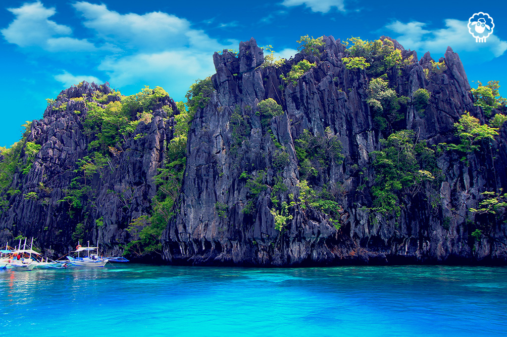
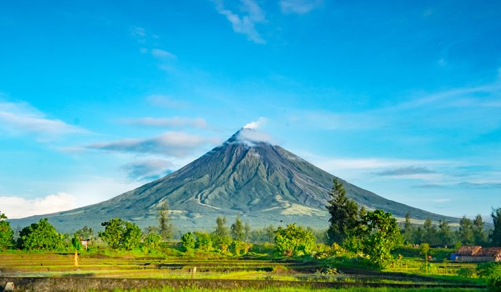

My Top 10 Global Dream Destinations
My Goals
My Top 3 Local Destinations
 El Nido,PalawanEl Nido is a Philippine municipality on Palawan island. It’s known for white-sand beaches, coral reefs and as the gateway to the Bacuit archipelago, a group of islands with steep karst cliffs. Miniloc Island is famed for the clear waters of its Small and Big lagoons. Nearby Shimizu Island has fish-filled waters. The area has many dive sites, including Dilumacad Island’s long tunnel leading to an underwater cavern.
 Mayon Volcano
Also known as Mayon Volcano or Mount Mayon, is a sacred and active stratovolcano in the province of Albay in Bicol Region, on the large island of Luzon in the Philippines. Renowned as the "perfect cone" because of its symmetric conical shape, the volcano with its surrounding landscape was declared a national park on July 20, 1938, the first in the nation.

Batanes
Batanes is an archipelagic province in the Philippines situated in the Cagayan Valley region. It is the northernmost province in the country, and also the smallest, both in population and land area. Its capital is Basco located on the island of Batan.